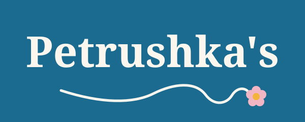

Grown in Dubuque, Iowa
Petrushka's is a set of small businesses run out of Dubuque, Iowa. Each one has its own site. They share this name and this look.
Petrushka's is Petra's nickname. The name honors her.
Contact email goes live with the domain.